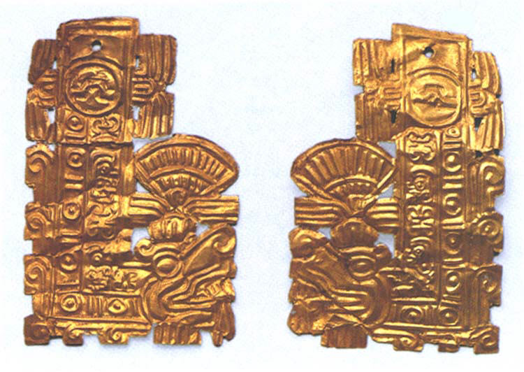
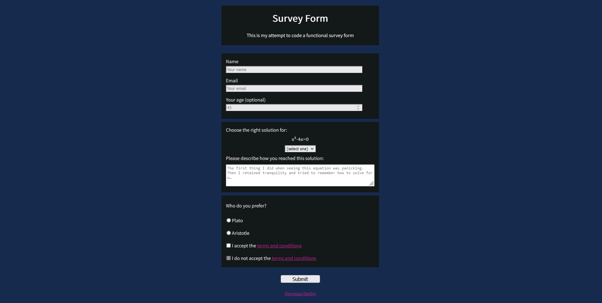
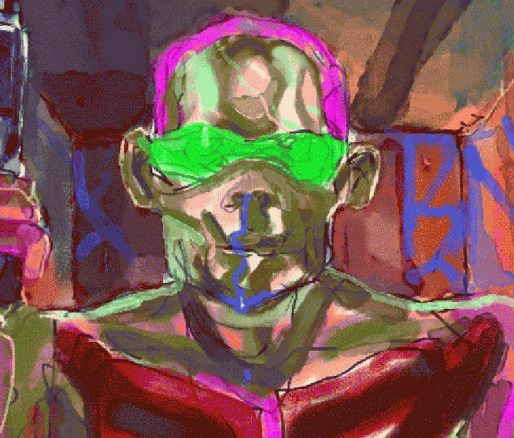

ABOUT ME
Greetings! My name is Henrique Darlim. I'm currently learning Responsive Web Design on freeCodeCamp and this is the final project for it, made as a way to organize and expose the projects I've done since then.
Below are my main projects
Deleuze tribute page

Quetzalcoatl tribute page

Survey Form

Annotations on Graeber's Debt

Cruelty Squad landing page